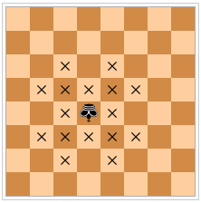

On a chess board, a centaur moves like a king or a knight. The diagram below shows the valid moves of a centaur (represented by an inverted king) on an $8 \times 8$ board.

It can be shown that at most $n^2$ non-attacking centaurs can be placed on a board of size $2n \times 2n$.
Let $C(n)$ be the number of ways to place $n^2$ centaurs on a $2n \times 2n$ board so that no centaur attacks another directly.
For example $C(1) = 4$, $C(2) = 25$, $C(10) = 1477721$.
Let $F_i$ be the $i$th Fibonacci number defined as $F_1 = F_2 = 1$ and $F_i = F_{i - 1} + F_{i - 2}$ for $i \gt 2$.
Find $\displaystyle \left( \sum_{i=2}^{90} C(F_i) \right) \bmod (10^8+7)$.